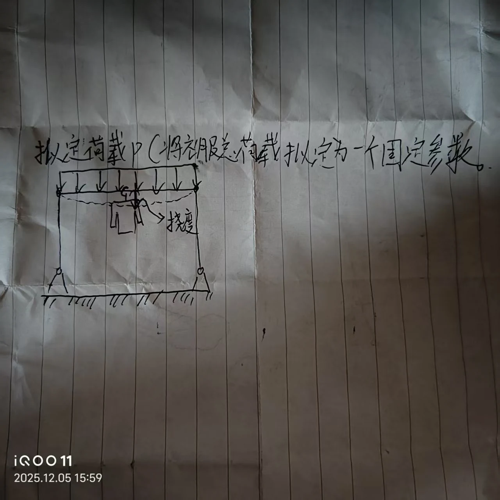
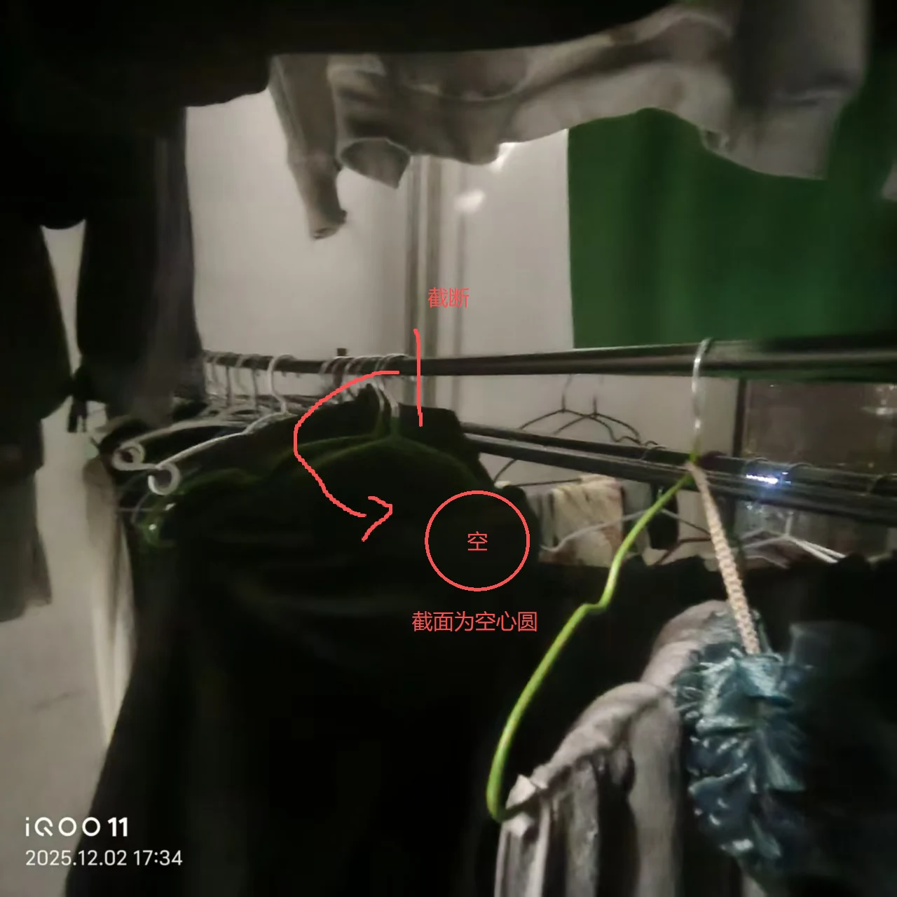
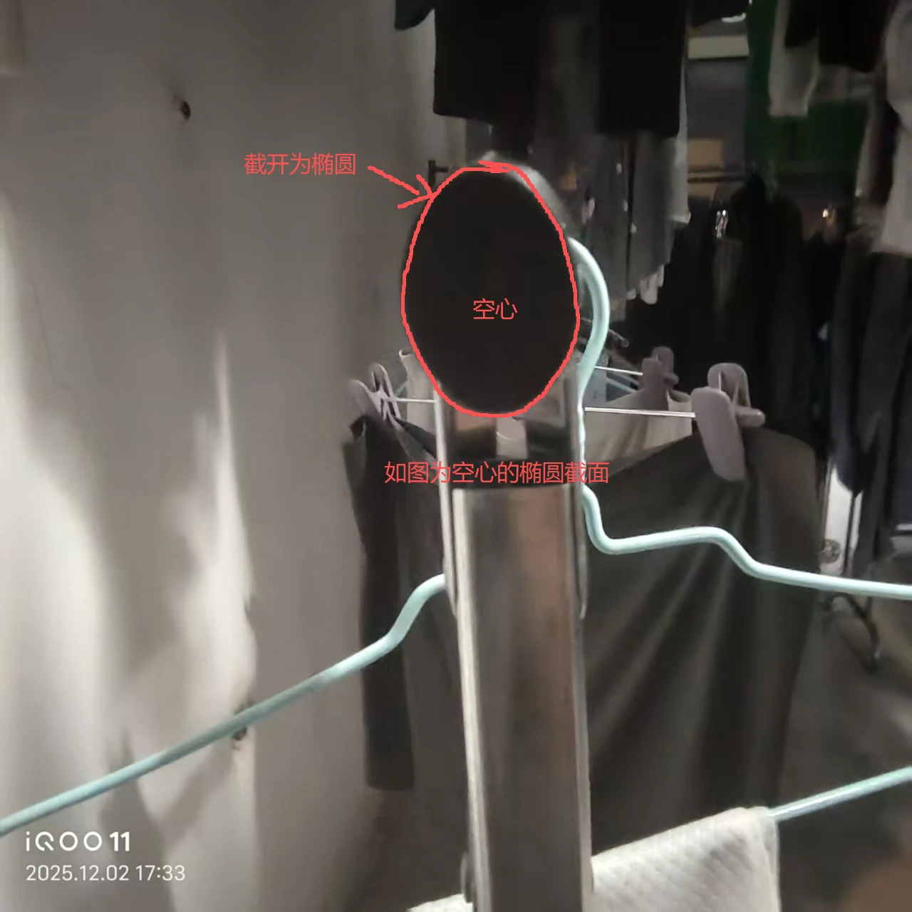
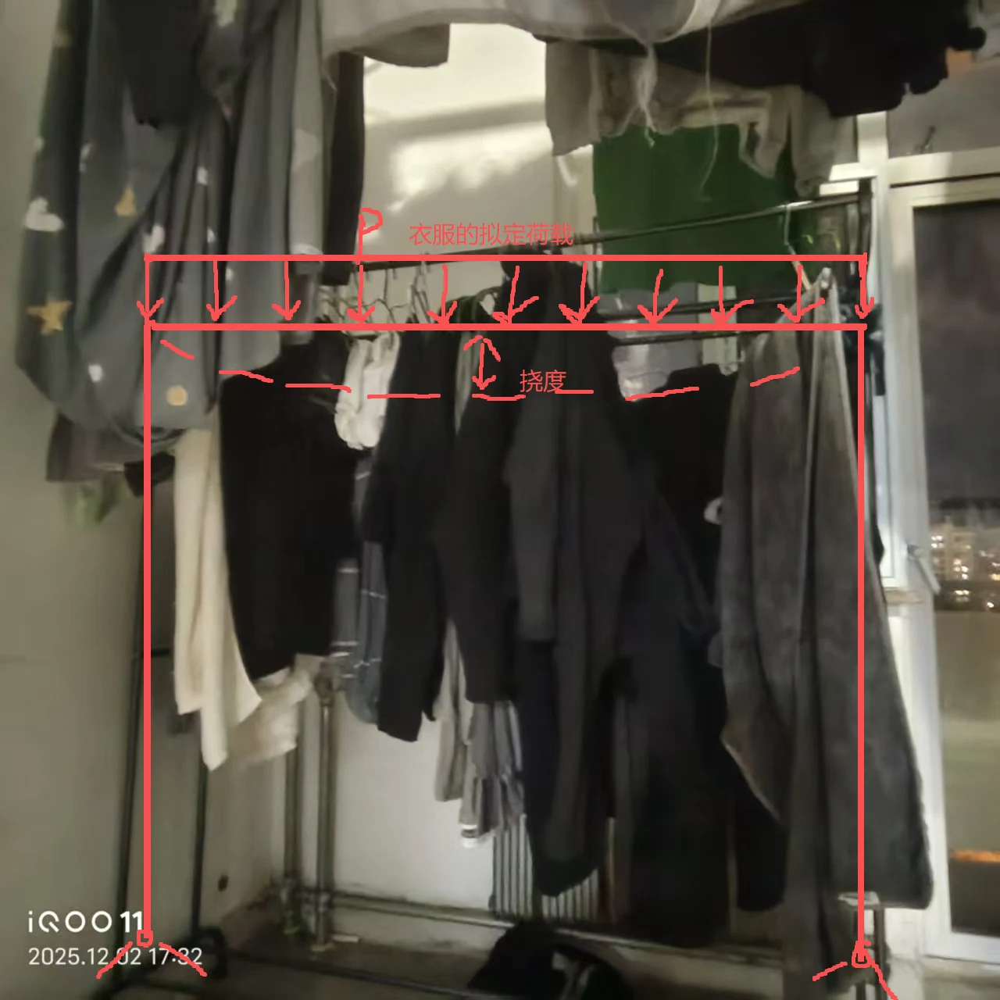

大连交通大学 · 智能建造23
我的原作生活力学现象解析：不同截面晾衣杆的受弯性能差异
刘泊言
一、表达力学问题
（一）意义
受弯构件是《材料力学》与《结构设计原理》中最基础的构件类型之一，小到生活中的晾衣杆、拖把杆，大到建筑中的楼面梁、桥梁承重梁，均属于受弯构件范畴。解析晾衣杆的弯曲变形规律，可直观理解 "截面形状决定抗弯性能" 的核心原理，为工程中梁、板等构件的截面设计提供生活化参照，避免出现类似农村自建房中 "盲目配筋或减配" 的误区。
（二）影响因素
截面形状：核心影响因素，截面对中性轴的惯性矩 I 直接决定抗弯刚度，椭圆截面惯性矩远大于同面积圆形截面，抗弯能力更强。
材料特性：弹性模量 E 决定变形恢复能力，铝合金（E≈70GPa）较塑料（E≈2GPa）更不易产生永久变形；
跨度与荷载：跨度 L 增大时，最大弯矩 M 与 L² 成正比，相同荷载下长晾衣杆更易弯曲。
（三）趋势
受工业设计中 "拓扑优化" 理念影响，受弯构件正朝着 "轻量化 + 高强度" 方向发展。如晾衣杆从实心圆杆向薄壁矩形杆、中空异形杆演进，通过优化截面形状而非增加材料用量提升抗弯性能，与建筑结构中 "梁截面高宽比优化（1/2~1/3）" 的设计逻辑一致。
（四）力学简图

二、生活中体现
照片 1：对照组设置


标注：图一圆形截面杆（惯性矩 I₁=1.57×10⁴mm4）；图二椭圆截面杆（惯性矩 I₂=4.5×10⁴mm⁴）
配文：选取长度、重量相近但截面形状不同的两根晾衣杆作为对照，椭圆截面的惯性矩是圆形截面的 2.86 倍，为抗弯性能差异奠定结构基础。
照片 2：受力状态展示

如图有固定铰支座；拟定集中荷载 P；弯曲变形
配文：模拟日常晾衣场景，将晾衣杆简化为简支梁模型，荷载集中于跨中，此时杆发生平面弯曲，轴线由直线变为曲线。
3：经过拟定的计算后得出结果①圆杆挠度 f₁=32mm；②椭圆杆挠度 f₂=11mm；得出结论椭圆截面杆挠度仅为圆形截面的 34.4%，印证《材料力学》中 "惯性矩越大，弯曲变形越小" 的结论，因正应力沿截面高度线性分布，椭圆截面上下边缘应力分布更合理。
三， 对照《结构设计原理》：设计理念的体现
晾衣杆的截面选择，完美体现了结构设计中的几个基本理念：
材料的高效利用：结构设计追求在满足功能（刚度、强度）的前提下实现经济性。方形截面正是“材尽其用”的典范，它通过优化的几何形状，用相同的材料提供了比圆形截面更大的刚度。这与工程中广泛使用的工字形截面、箱形截面梁的设计思想一脉相承，它们都是为了将材料尽可能集中到翼缘（远离中性轴的位置），以最小的材料消耗获得最大的抗弯承载力。
（工程实例：工字形截面梁是充分利用材料提高惯性矩的经典设计）
刚度控制：对于晾衣杆这类受弯构件，其正常使用极限状态往往由刚度（即变形大小）控制，而非强度。用户关心的是衣服挂上去后杆子会不会弯得太厉害，而不是它会不会折断。因此，截面设计的首要目标是获得足够的惯性矩 I 以确保刚度。椭圆截面或者工程中的方形界面的选择正是基于这一设计准则。
稳定性考量：相较于圆形截面，椭圆截面在抗扭转方面也具有一定优势。当衣物非对称悬挂时，可能会产生扭矩，椭圆截面能提供更好的抗扭稳定性。
模型演示与工程印证
书中的模型演示有力地验证了这一原理：用用量相同的材料制成非圆截面时，平放时（截面高度小）感觉非常柔软，而立放时（截面高度大）则明显刚硬。这是因为立放时，材料分布在了距离中性轴更远的位置，极大地增加了惯性矩。工字形截面则是这一思想的极致发挥，其大部分材料集中在上下翼缘，从而用极少的材料获得了巨大的惯性矩和抗弯能力，因此在大跨结构（如桥梁、厂房）中应用极为广泛。
这是一份便于网页阅读的原作视图，保留提交内容的文字、图片和基本顺序；公开页面不显示学号。